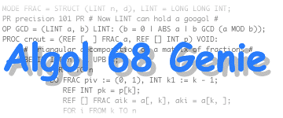

Documentation for Algol 68 Genie Mark 10.1
Documentation for Algol 68 Genie Mark 10.1
|
Documentation for Algol 68 Genie Mark 10.1
|
Linear algebra using the GNU Scientific Library· Elementary operations on vectors and matrices· Monadic operators · Dyadic operators · Solution of linear algebraic equations · LU decomposition through Gaussian elimination · Singular value decomposition · QR decomposition · Cholesky decomposition |
 |
|
Algol68G extends the standard environ as described by the Revised Report with a number of procedures for linear algebra. These procedures require the GNU Scientific Library (GSL, version 1.8 or compatible). This library is optional; if it is not present on your system, Algol68G will build without support for linear algebra. Older releases of Algol 68 Genie had a number of native routines for elementary vector operations, but these have been decomitted as of Mark 10 as GSL is well accessible.
The routines described in this chapter provide a simple vector and matrix interface to Algol 68 rows
[] REAL # vector # [, ] REAL # matrix # [] COMPLEX # complex vector # [, ] COMPLEX # complex matrix #Routines in this chapter convert Algol 68 rows to objects compatible with vector- and matrix formats used by BLAS routines. However, they are always passed to GSL routines.
OP + = ([] REAL u) [] REAL
OP + = ([, ] REAL u) [, ] REAL
OP + = ([] COMPLEX u) [] COMPLEX
OP + = ([, ] COMPLEX u) [, ] COMPLEX
- Evaluates
+ u.
OP - = ([] REAL u) [] REAL
OP - = ([, ] REAL u) [, ] REAL
OP - = ([] COMPLEX u) [] COMPLEX
OP - = ([, ] COMPLEX u) [, ] COMPLEX
- Evaluates
- u.
OP NORM = ([] REAL u) REAL
OP NORM = ([] COMPLEX u) REAL
u.
OP TRACE = ([, ] REAL u) REAL
OP TRACE = ([, ] COMPLEX u) COMPLEX
u.
OP T = ([, ] REAL u) [, ] REAL
OP T = ([, ] COMPLEX u) [, ] COMPLEX
u.
OP DET = ([, ] REAL u) REAL
OP DET = ([, ] COMPLEX u) COMPLEX
u by LU decomposition.
OP INV = ([, ] REAL u) [, ] REAL
OP INV = ([, ] COMPLEX u) [, ] COMPLEX
u by LU decomposition.
OP = = ([] REAL u, [] REAL v) BOOL
OP = = ([, ] REAL u, [, ] REAL v) BOOL
OP = = ([] COMPLEX u, [] COMPLEX v) BOOL
OP = = ([, ] COMPLEX u, [, ] COMPLEX v) BOOL
- Evaluates whether
u equals v.
OP /= = ([] REAL u, [] REAL v) BOOL
OP /= = ([, ] REAL u, [, ] REAL v) BOOL
OP /= = ([] COMPLEX u, [] COMPLEX v) BOOL
OP /= = ([, ] COMPLEX u, [, ] COMPLEX v) BOOL
- Evaluates whether
u does not equal v.
OP DYAD = ([] REAL u, [] REAL v) [, ] REAL
OP DYAD = ([] COMPLEX u, [] COMPLEX v) [, ] COMPLEX
u and v.
The priority of DYAD is 3. This means that (assuming standard priorities)
addition, subtraction, multiplication and division have priority over a dyadic product:
r + dr DYAD t * r is equivalent to (r + dr) DYAD (t * r).
OP + = ([] REAL u, [] REAL v) [] REAL
OP + = ([, ] REAL u, [, ] REAL v) [, ] REAL
OP + = ([] COMPLEX u, [] COMPLEX v) [] COMPLEX
OP + = ([, ] COMPLEX u, [, ] COMPLEX v) [, ] COMPLEX
- Evaluates
u + v.
OP +:= ([] REAL u, [] REAL v) [] REAL
OP +:= ([, ] REAL u, [, ] REAL v) [, ] REAL
OP +:= ([] COMPLEX u, [] COMPLEX v) [] COMPLEX
OP +:= ([, ] COMPLEX u, [, ] COMPLEX v) [, ] COMPLEX
- Evaluates
u := u + v.
OP - = ([] REAL u, [] REAL v) [] REAL
OP - = ([, ] REAL u, [, ] REAL v) [, ] REAL
OP - = ([] COMPLEX u, [] COMPLEX v) [] COMPLEX
OP - = ([, ] COMPLEX u, [, ] COMPLEX v) [, ] COMPLEX
- Evaluates
u - v.
OP -:= ([] REAL u, [] REAL v) [] REAL
OP -:= ([, ] REAL u, [, ] REAL v) [, ] REAL
OP -:= ([] COMPLEX u, [] COMPLEX v) [] COMPLEX
OP -:= ([, ] COMPLEX u, [, ] COMPLEX v) [, ] COMPLEX
- Evaluates
u := u - v.
OP * = ([] REAL u, REAL v) [] REAL
OP * = ([, ] REAL u, REAL v) [, ] REAL
OP * = ([] COMPLEX u, COMPLEX v) [] COMPLEX
OP * = ([, ] COMPLEX u, COMPLEX v) [, ] COMPLEX
- Evaluates scaling by a scalar
u * v.
OP * = (REAL u, [] REAL v) [] REAL
OP * = (REAL u, [, ] REAL v) [, ] REAL
OP * = (COMPLEX u, [] COMPLEX v) [] COMPLEX
OP * = (COMPLEX u, [, ] COMPLEX v) [, ] COMPLEX
- Evaluates scaling by a scalar
u * v.
OP * = ([, ] REAL u, [] REAL v) [] REAL
OP * = ([, ] COMPLEX u, [] COMPLEX v) [] COMPLEX
- Evaluates matrix-vector product
u * v.
OP * = ([] REAL u, [, ] REAL v) [] REAL
OP * = ([] COMPLEX u, [, ] COMPLEX v) [] COMPLEX
- Evaluates vector-matrix product
u * v, that equals vT * u.
OP * = ([] REAL u, [] REAL v) REAL
OP * = ([] COMPLEX u, [] COMPLEX v) COMPLEX
u and v.
OP * = ([, ] REAL u, [, ] REAL v) [, ] REAL
OP * = ([, ] COMPLEX u, [, ] COMPLEX v) [, ] COMPLEX
- Evaluates matrix-matrix product
u * v.
OP *:= = (REF [] REAL u, REAL v) REF [] REAL
OP *:= = (REF [, ] REAL u, REAL v) REF [, ] REAL
OP *:= = (REF [] COMPLEX u, COMPLEX v) REF [] COMPLEX
OP *:= = (REF [, ] COMPLEX u, COMPLEX v) REF [, ] COMPLEX
- Evaluates scaling by a scalar
u := u * v.
OP / = ([] REAL u, REAL v) [] REAL
OP / = ([, ] REAL u, REAL v) [, ] REAL
OP / = ([] COMPLEX u, COMPLEX v) [] COMPLEX
OP / = ([, ] COMPLEX u, COMPLEX v) [, ] COMPLEX
- Evaluates scaling by a scalar
u / v.
OP /:= = (REF [] REAL u, REAL v) REF [] REAL
OP /:= = (REF [, ] REAL u, REAL v) REF [, ] REAL
OP /:= = (REF [] COMPLEX u, COMPLEX v) REF [] COMPLEX
OP /:= = (REF [, ] COMPLEX u, COMPLEX v) REF [, ] COMPLEX
- Evaluates
u := u / v.
This paragraph describes routines for solving linear algebraic equations. These are intended for “small” linear equations where simple algorithms are acceptable. Should you be interested in solving large linear equations please refer to for instance LAPACK.
A square matrix has an LU decomposition into upper and lower triangular matrices P * A = L * U where A is a square matrix, P is a permutation matrix, L is a unit lower triangular matrix and U is an upper triangular matrix. For square matrices this decomposition can be used to convert the linear equation A * x = b into a pair of triangular equations (L * y = P * b, U * x = y), which can be solved by forward- and back-substitution.
The algorithm that gsl uses in LU decomposition is Gaussian elimination with partial pivoting. Advantages of LU decomposition are that it works for any square matrix and will efficiently produce all solutions for a linear equation. A disadvantage of LU decomposition is that that it cannot find approximate (least-square) solutions in case of singular or ill-conditioned matrices, that are better solved by a singular value decomposition.
PROC lu decomp = ([, ] REAL a, REF [] INT p, REF INT sign) [, ] REAL
PROC complex lu decomp = ([, ] COMPLEX a, REF [] INT p, REF INT sign) [, ] COMPLEX
a into the LU
decomposition P * A = L * U. The diagonal and upper
triangular part of the returned matrix contain U.
The lower triangular part of the returned matrix holds L. Diagonal elements of L are unity, and are not stored. Permutation matrix P is encoded in the permutation p. The sign of the permutation is given by sign. It has the value (-1)n, where n is the number of row interchanges in the permutation.
PROC lu solve ([, ] REAL a, lu, [] INT p, [] REAL b) [] REAL
PROC complex lu solve ([, ] COMPLEX a, lu, [] INT p, [] COMPLEX b) [] COMPLEX
a into lu,p as calculated by [complex] lu decomp.
PROC lu inv = ([, ] REAL lu, [] INT p) [, ] REAL
PROC complex lu inv = ([, ] COMPLEX lu, [] INT p) [, ] COMPLEX
lu,p as calculated by [complex] lu decomp. The inverse is computed by solving A * Ainv = 1.
It is not recommended to use the inverse matrix to solve a linear equation A * x = b by applying b = Ainv * b; use [complex] lu solve for better precision instead.
PROC lu det = ([, ] REAL lu, INT sign) REAL
PROC complex lu det = ([, ] COMPLEX lu, INT sign) COMPLEX
lu, sign as calculated by [complex] lu decomp. The determinant is computed as the
product of the diagonal elements of U and the sign of the row
permutation sign.
A M * N matrix A has a singular value decomposition in the product of a M * N orthogonal matrix U, a N * N diagonal matrix S and the transpose of a N * N orthogonal square matrix V, such that A = U * S * VT. The singular values Sii are zero or positive, off-diagonal elements are zero.
Singular value decomposition has many practical applications. The ratio of the largest to the smallest singular value is called the condition number; a high ratio means that the equation is ill conditioned. Zero singular values indicate a singular matrix A, the number of non-zero singular values is the rank of A. Small singular values should be edited by choosing a suitable tolerance since finite numerical precision may result in a singular value to be close to, but no equal to, zero.
PROC sv decomp = ([, ] REAL a, REF [, ] REAL v, REF [] REAL s) [, ] REAL
A into the singular value decomposition A = U * S * VT for M >= N. The routine yields U. The diagonal elements of singular value matrix S are stored in vector s. The singular values are non-negative and form a non-increasing sequence from s1 to sN. Matrix v contains on completion the elements of V in untransposed form. To form the product U * S * VT it is necessary to take the transpose of V. This routine uses the Golub-Reinsch SVD algorithm.
PROC svd solve ([, ] REAL u, v, [] REAL s, [] REAL b) [] REAL
u, s, v) of A computed by svd decomp. Only non-zero singular values are used in calculating the solution. The parts of the solution corresponding to singular values of zero are ignored. Other singular values can be edited out by setting them to zero before calling this routine. In the overdetermined case where A has more rows than columns the routine returns solution x which minimizes ||A * x - b||2.
A M * N matrix A has a decomposition into the product of an orthogonal M * M sqaure matrix Q, where QT * Q = I, and an M * N right-triangular matrix R, such that A = Q * R. A linear equation A * x = b can be converted to the triangular equation R * x = QT * b, which can be solved by back-substitution.
QR decomposition can be used to determine an orthonormal basis for a set of vectors since the first N colums of Q form an orthonormal basis for the range of A.
PROC qr decomp = ([, ] REAL a, REF [] REAL t) [, ] REAL
a into the QR decomposition A = Q * R. The diagonal and upper triangular part of the returned matrix contain matrix R. The vector t and the columns of the lower triangular part of matrix a contain the Householder coefficients and Householder vectors which encode the orthogonal matrix Q. Vector t must have length min(M, N). Matrix Q is related to these components by Q = qk ... q2q1 where qi = I - ti vi viT and vi is the Householder vector vi = (0, ..., 1, A(i + 1, i), A(i + 2, i), ..., A(m, i)) (this is the same scheme as used by LAPACK). The algorithm used to perform the decomposition is Householder QR (Golub and Van Loan, Matrix Computations, Algorithm 5.2.1).
PROC qr solve ([, ] REAL a, [] REAL t, [] REAL b) [] REAL
a, t) computed by qr decomp. The least-squares solution for rectangular equations can be found using qr ls solve.
PROC qr ls solve ([, ] REAL a, [] REAL t, [] REAL b) [] REAL
A has more rows than columns, id est M > N. The least squares solution minimizes the Euclidean norm of the residual ||A * x - b||2. The routine uses the QR decomposition of A into (a, t) computed by qr decomp.
A symmetric, positive definite square matrix A has a Cholesky decomposition into a product of a lower triangular matrix L and its transpose LT, A = L * LT. This is sometimes referred to as taking the square-root of a matrix. The Cholesky decomposition can only be carried out when all the eigenvalues of the matrix are positive. This decomposition can be used to convert the linear system A * x = b into a pair of triangular equations (L * y = b, LT * x = y), which can be solved by forward and back-substitution.
PROC cholesky decomp = ([, ] REAL a) [, ] REAL
a into the Cholesky decomposition A = L * LT. The diagonal and lower triangular part of the returned matrix contain matrix L. The upper triangular part of the input matrix contains LT, the diagonal terms being identical for both L and LT. If the matrix is not positive-definite then the decomposition will fail.
PROC cholesky solve ([, ] REAL a, [] REAL b) [] REAL
a computed by cholesky decomp.
Copyright © 2001-2006 J. Marcel van der Veer.
Algol 68 Genie Mark 10.1 (December 2006)